The table summarizes the tools we have studied so far.
| Indep Var \ Dep Var Pair# | Continuous | Discrete |
|---|---|---|
| Continuous | OLS Regression | Logistic Regression |
| Discrete | T-Test, ANOVA (population -> interval measusure) | Categorical Data Analysis (Chi-square: category -> count) |
This chapter exmine relationships between continuous dependent variables and continuous dependent variables. For example, what will be the rate of return on investment? For each dollar invested, how much will sales increase?
To further clarify the concepts:
Assume the relationship between the dependent variable (Y) and the independent variable (X) is linear:
E(Y|X) = 𝛼 + βX
where:
E(Y|X) = the average value of Y for a given value of X
β = slope coefficient (i.e. how much a 1-unit change in X affects the value of Y)
𝛼 = intercept (i.e. the point where the regression line crosses the Y axis)
The graph shows the perfect linear relationship between X and Y:
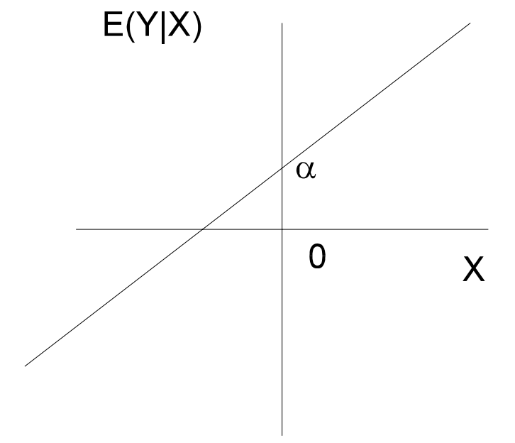
The true population parameters are unknown and need to be estimated from sample data.
Sample regression line:
Ŷ = α̂ + β̂X
Sample regression model:
yᵢ = α̂ + β̂xᵢ + ε̂ᵢ
= ŷᵢ + ε̂ᵢ
OLS is the method to find values for 𝛼 and β so that to εᵢ is minimized:
εᵢ = yᵢ - ŷᵢ
∑εᵢ² = ∑(yᵢ - ŷᵢ)²
Hence, best values for 𝛼 and β are:
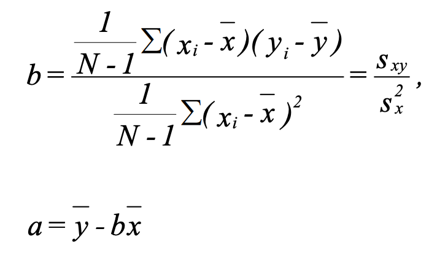
Given the above formula:
When x = x̄:
ŷ = 𝛼 + βx̄ = ȳ - βx̄ + βx̄ = ȳ
The regression line includes (x̄, ȳ)
When β = 0:
ŷ = 𝛼 + βx = ȳ - βx̄ + βx = ȳ
When slope is 0, the best estimate for y is ȳ.
x has no impact on predicting y.
Assumptions for hypothesis test:
Gauss-Markov Theorem: if assumptions 1, 3, 4, and 5 hold true, then estimators a and b determined by the least squares method are BLUE (Best Linear Unbiased Estimate) i.e. they are unbiased and have the smallest possible variance.
SST stands for sum of squares total. If subscript is missing, SSTy is assumed. SP stands for sum of products. Those are intermediate results used by later steps.
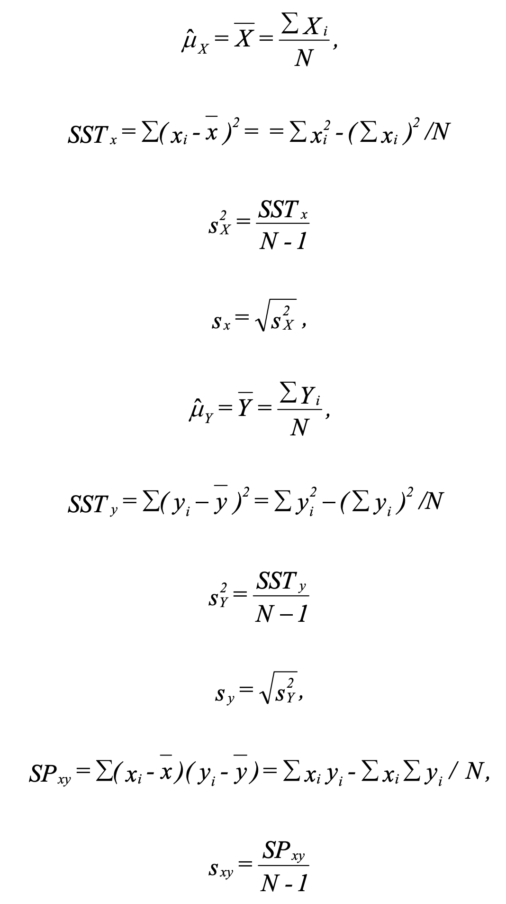
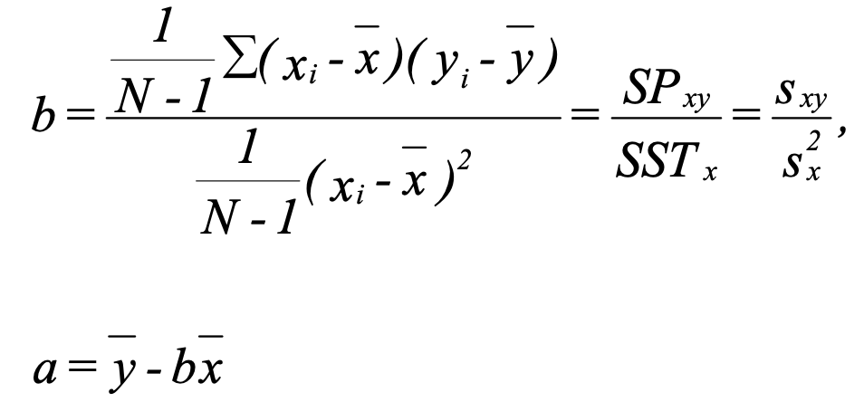
SSR stands for sum of squares regression (also called SS Explained). SSE stands for sum of squares error.
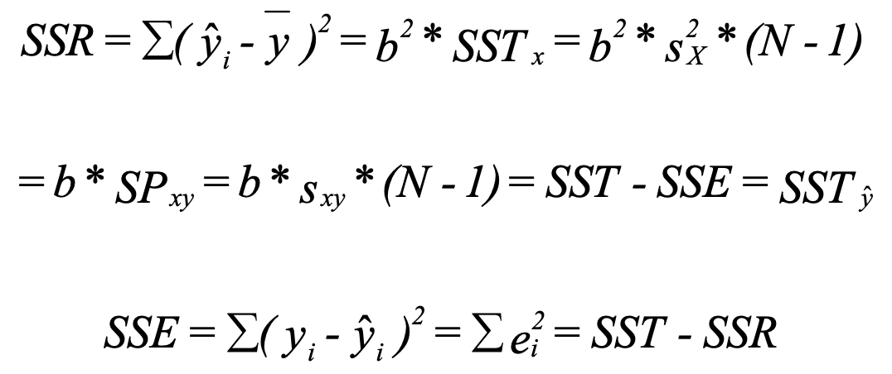
SEE stands for standard error of the estimate.
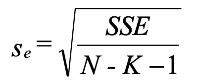
The value of sₑ can be interpreted in a manner similar to the sample standard deviation of the values of x about x̄. Given that εᵢ ~ N(0, σₑ²), then:
Using this gives one a good indication of the fit of the regression line to the sample data. Note that increases in sample size increase both the numerator and the denomination, so sₑ is relatively unaffected by the size of the sample.
sᵦ is a measure of the amount of sampling error in the regression coefficient β.
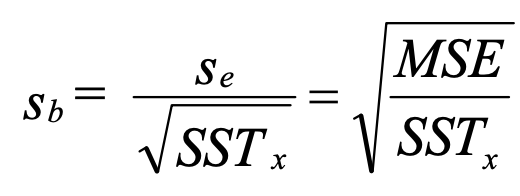
With sᵦ, we can then use t-test to test null hypothesis H₀: β = β₀.
Confidence interval for β:
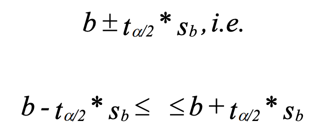
Test whether b significantly differs from 0:
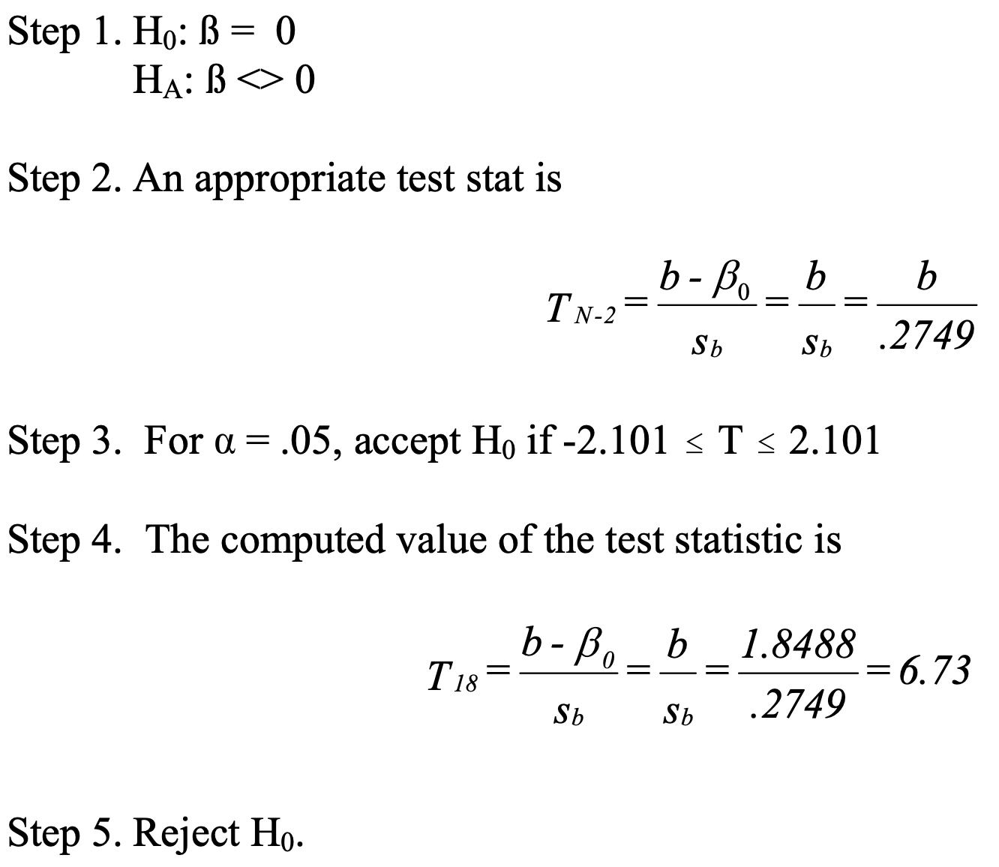
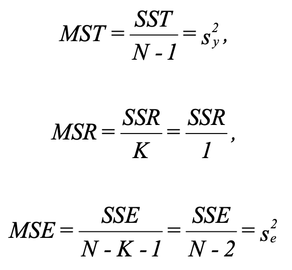
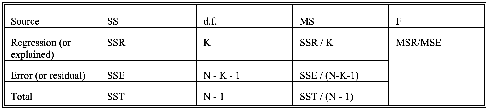
The F test tells if the regression effect is significant (the difference between ŷ and ȳ (the explained) relative to the difference between y and ŷ (the error)). In other word, this test whether β is significantly different from 0 (no relationship when 0).
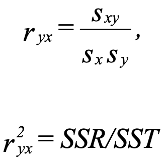